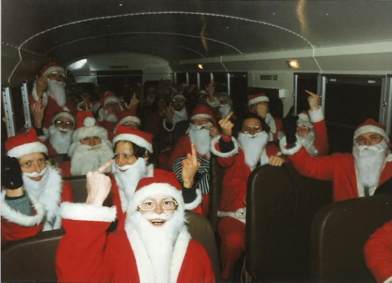
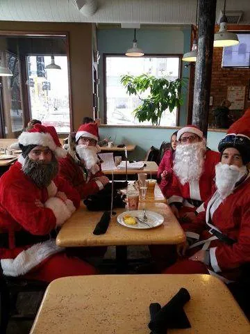

That was the name of a secret society of San Francisco urban daredevils (active from 1977 to 1982, and often called the first modern urban explorers) whose spirit of mischief eventually gave rise to the Cacophony Society, an influential collection of subversive pranksters, artists, and playful adventurers. Despite the name, it was never about death. It was about facing your fears.
The group helped inspire Chuck Palahniuk’s Fight Club and the creation of Burning Man, while pioneering the kind of organized chaos that would later become flash mobs.
Then, in 1994, they put a busload of Santas in cheap red suits onto the streets of San Francisco to rattle the holidays. Palahniuk himself would become involved in the early Santa mayhem.
These weren’t your ordinary Santas. They stormed department stores, crashed Christmas parties, packed children’s rides, and visited strip clubs. By 1995, Santas were climbing lampposts, blocking traffic, staging a mock public hanging in downtown San Francisco, and getting arrested.

Photo: Peter Field
The madness spread across the country and eventually around the world under names like Santarchy, Santa Rampage, and SantaCon.
But somewhere along the way, the joke changed.
What began as counterculture performance art gradually became, in many cities, an excuse to get spectacularly drunk in a Santa suit. New York City’s SantaCon became particularly notorious, earning the nickname “America’s Most Hated Christmas Party” and attracting national headlines for public drunkenness and general bad behavior.

Photo: Jim Henderson / CC0
The whole thing had drifted so far from its absurdist roots that some of its original creators held a mock funeral for it.
Our story · Since 2013
How a Dozen Friends Became 178 Friendly Santas
A dozen riders, coffee-shop posters, a Facebook page, two good videos, and a lot of word of mouth.
But somewhere along the way, somebody also put Santa on a bicycle.
In 2012, a guy named Brent attended the Milwaukee Santa Cycle Rampage and decided Minneapolis needed one too. He called a couple of friends, and in December 2013, they put on Santa suits and rode their bikes around Minneapolis for the day.
The first ride.



For years, that was the Santa Cycle Rampage: about a dozen people, a few homemade posters, and a nervous request to a bike shop or coffee shop to hang one in the window. It grew a little at a time, with a few more riders joining each year.
Previous posters
 2013 · The first poster
2013 · The first poster 2014 · I Sing the Santa Electric
2014 · I Sing the Santa Electric 2017 · Tour de Chocolate Heads
2017 · Tour de Chocolate Heads 2023 · Big mouth strikes again.
2023 · Big mouth strikes again.Eventually, we made a Facebook page, and the ride began to gather steam. Then came good video. Vitaly Katasonov of Open Russian Speaking MN filmed a ride. Mike Binkley of North Loop Neighborhood News wrote about us and shot professional video that we still use throughout this website. For the first time, people could see what ride day actually felt like.
North Loop Neighborhood News shared our videos and wrote about us over the next two years. Then the videos and word of mouth did the rest: people telling friends, friends showing up, and those friends telling more friends.
The Santas keep rolling.
Footage: Mike Binkley
We didn’t ride during COVID. When we came back in 2021, there were two dozen of us.
Then it took off.
In 2025, 178 riders showed up.
Then and now.


Nobody planned it. We just kept putting on the suits.
Minneapolis sits somewhere between the two coasts, and so does our idea. San Francisco brought the anarchy. New York brought the Santa suit as a disguise: a way to be anonymous, get trashed, and behave badly. We took a little of each and pointed it at the sadness of the season.
The Suicide Club and the Cacophony Society used absurdity to jolt mainstream culture. SantaCon turned Santa suits, alcohol, and anonymity into an ugly combination. We kept the absurdity, the Santa suits, and the beer. But somewhere along the way, we found something better: kindness.
Okay, the beer helps.
There’s something about wearing a Santa suit that makes it easier to be kind to strangers. And something about seeing a Santa suit that makes strangers more willing to accept that kindness. You can wave, make someone laugh, or brighten someone’s day without anyone thinking twice about it.
At SantaCon, the suit is a disguise to hide in the crowd and act out. For us, the costume is still a disguise, but we use it to blend in with a group and spread cheer. The suit helps strangers lower their guard, and the group lets us be openly joyful without feeling exposed.
Maybe that’s our particular brand of mayhem.
In a weary world, kindness is its own kind of rebellion.


Further reading: An Oral History of SantaCon · Cheap Suit Santas, 1994 · SantaCon’s history and 2014 funeral